2023
Puudukk is a new jewelry brand that celebrates authenticity and personal style. Designed for women and men of all ages, its pieces blend timeless elegance with a fresh, Mediterranean vibe. Versatile jewelry with personality and a subtle touch of the sea.
Branding, Social Media, Product photography
Puudukk es una nueva marca de joyas que celebra la autenticidad y el estilo de cada persona. Diseñada para mujeres y hombres de todas las edades, sus piezas combinan elegancia atemporal con un aire mediterráneo fresco y natural. Joyas versátiles, con personalidad y un toque del mar.
Puudukk reflects its origins and essence, born in the lands of the Ebro Delta. For this reason, they chose to incorporate the figure of a flamingo, an iconic symbol of the region. The challenge was to create a design that combined this natural element with a feminine, fresh, and sophisticated style, aligned with the brand’s identity and its Mediterranean inspiration.
In addition, the product photography follows this same aesthetic line, reinforcing the brand's visual coherence and conveying its essence in every detail.
Puudukk transmitiera el origen y la esencia, nacida en las tierras del Delta del Ebro. Por eso, quiso incorporar la figura de un flamenco, símbolo icónico de la zona. El reto era lograr un diseño que combinara ese elemento natural con un estilo femenino, fresco y sofisticado, en línea con la identidad de la marca y su inspiración mediterránea. Además, las fotografías de producto siguen esta misma línea estética, reforzando la coherencia visual de la marca y transmitiendo su esencia en cada detalle.
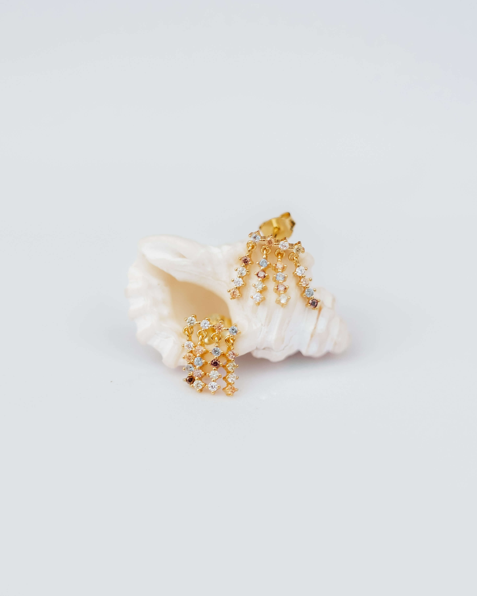
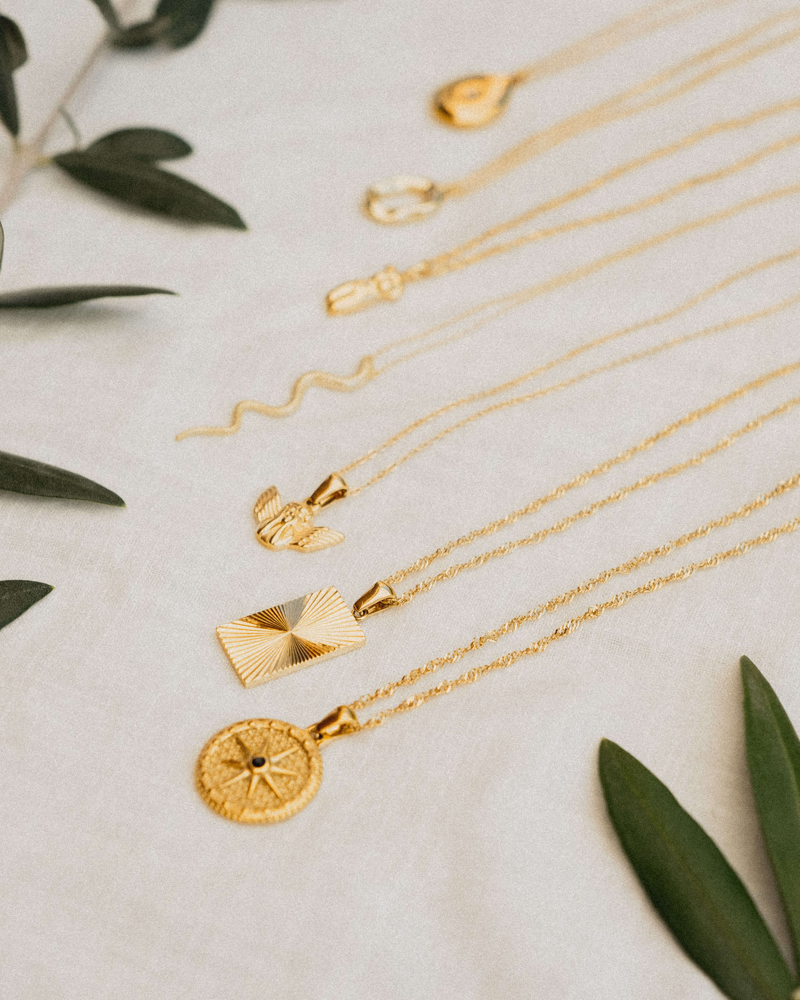
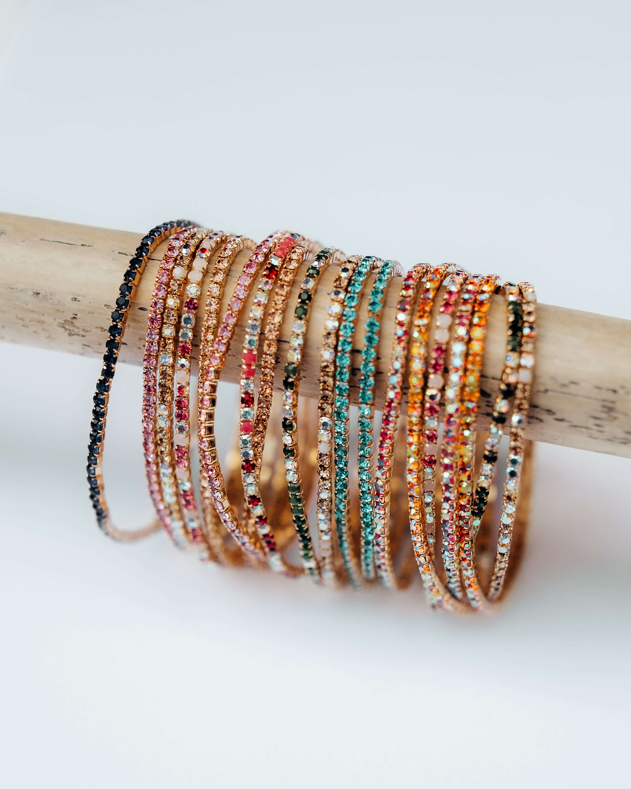
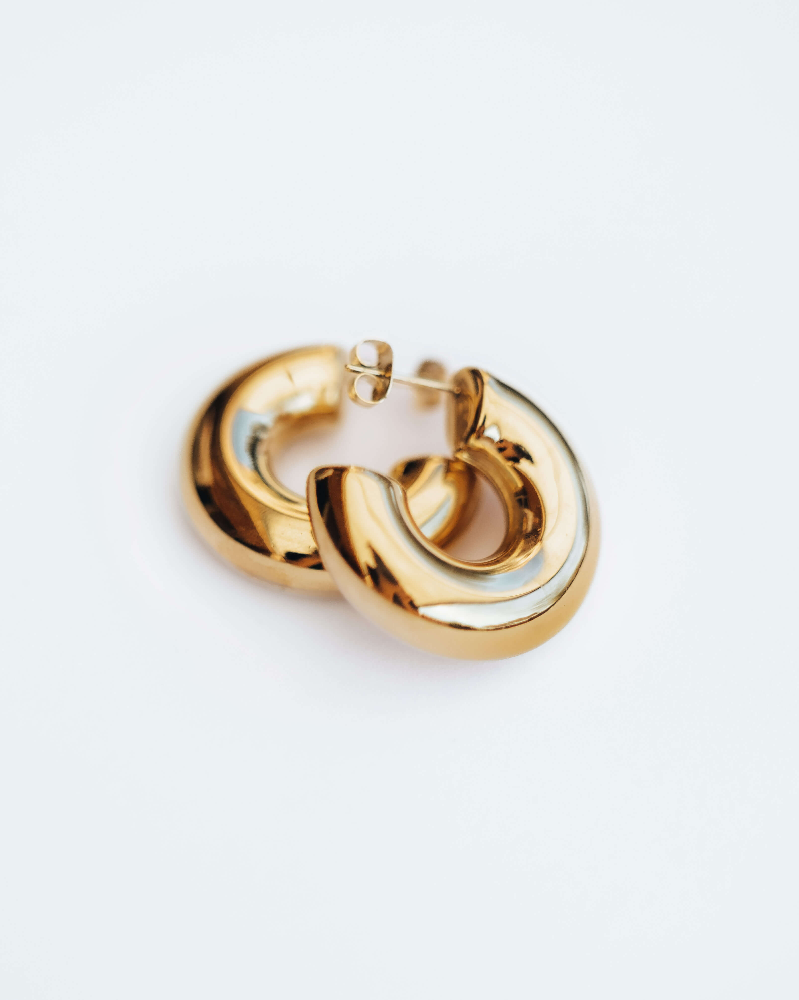
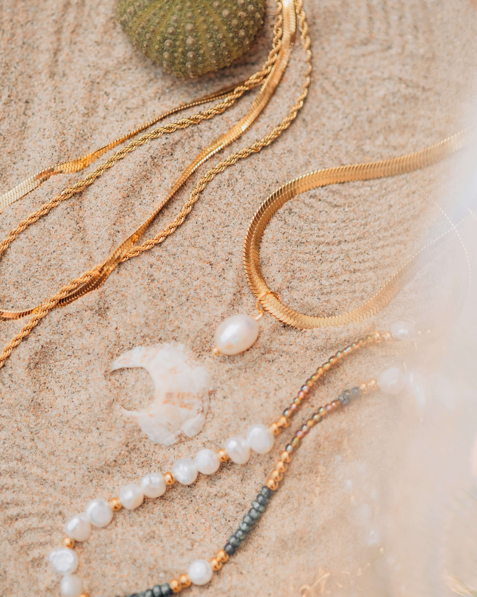
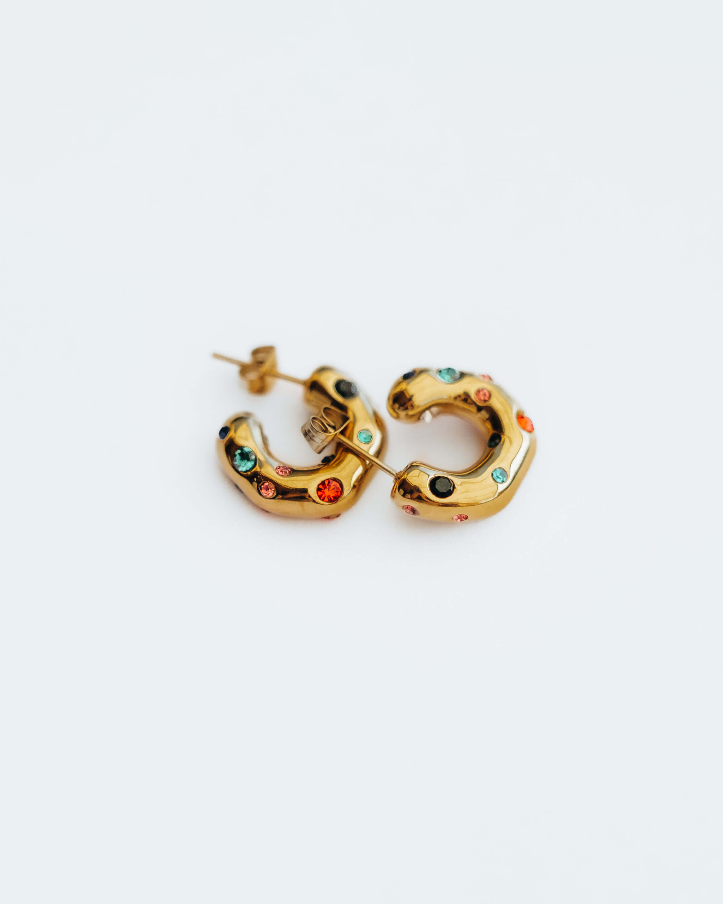
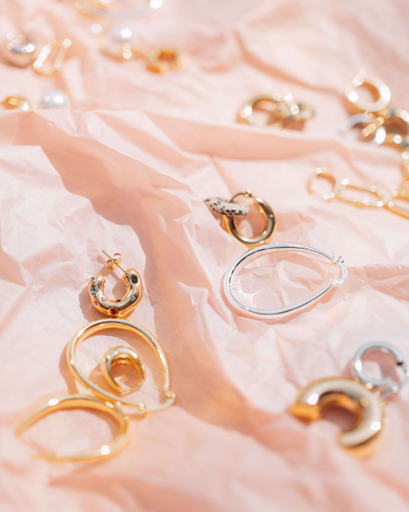
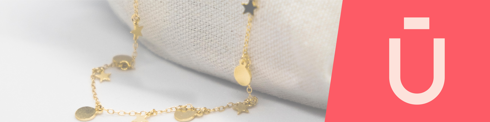
For the brand’s social media, the goal was to convey a clean and minimalist image, where the product is the primary focus and the various calls to action stand out clearly.
Para las redes sociales de la marca se quería transmitir una imagen limpiar, donde el producto fuese el primer impacto así como las diferentes llamadas a la acción.
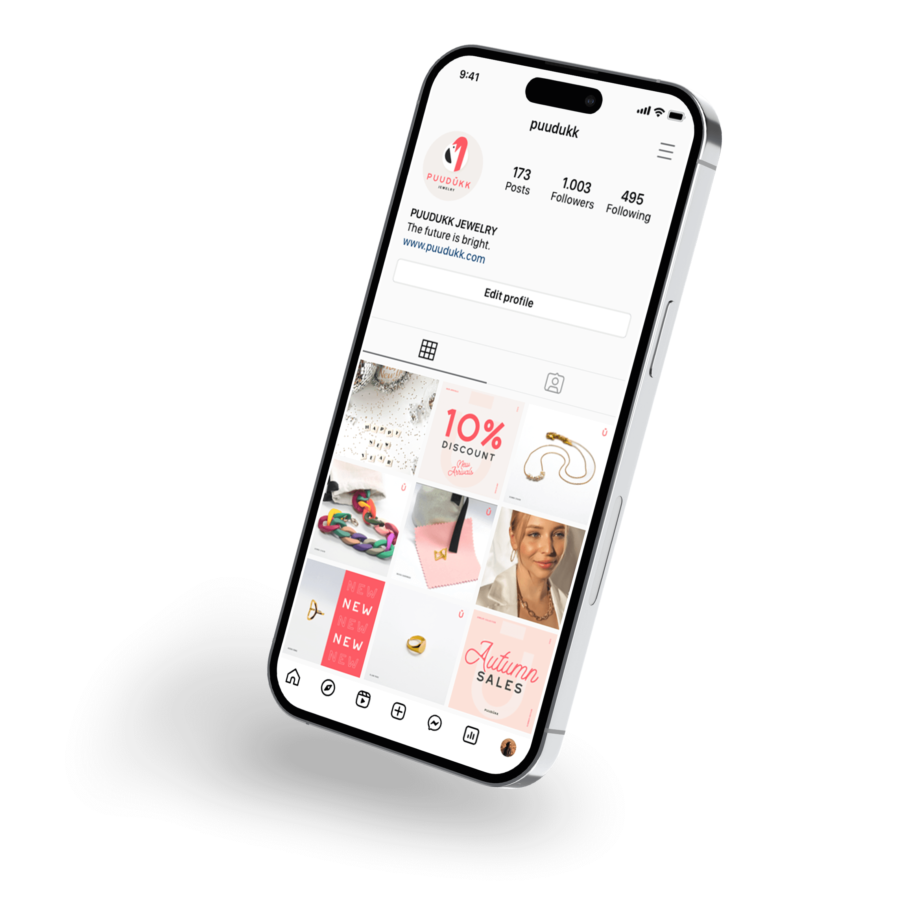
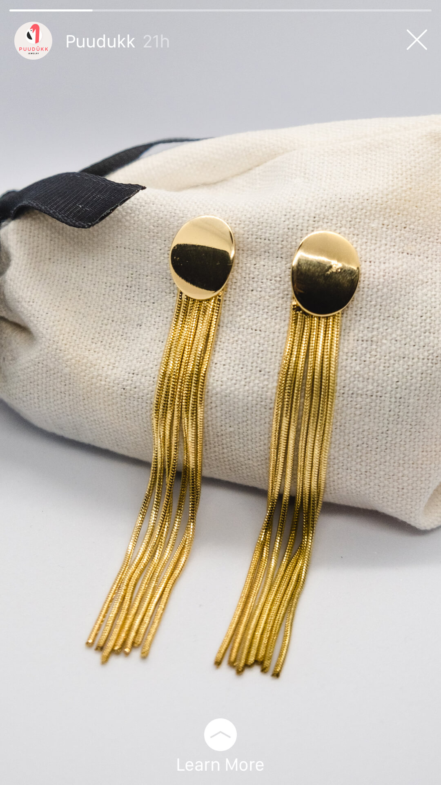
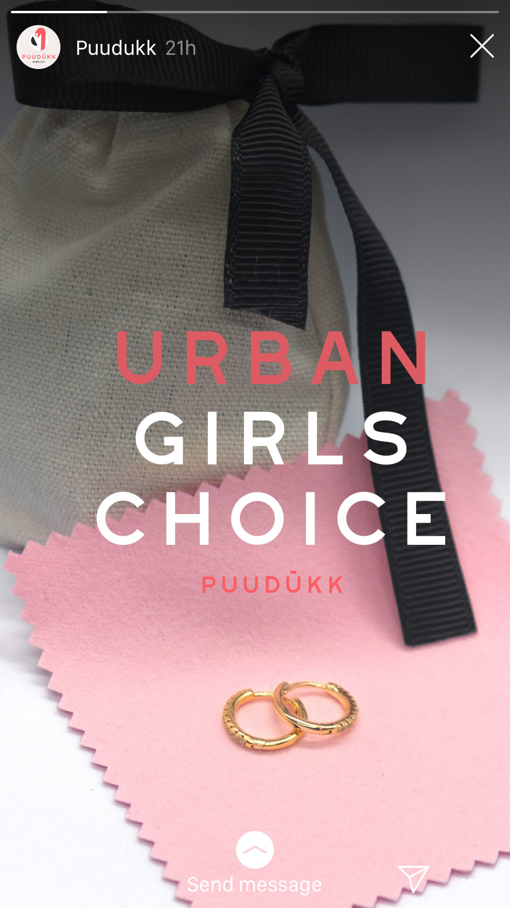
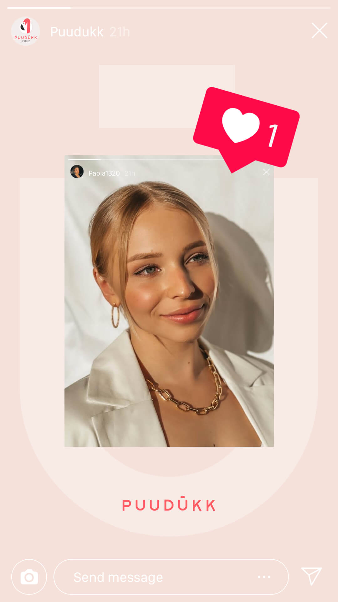
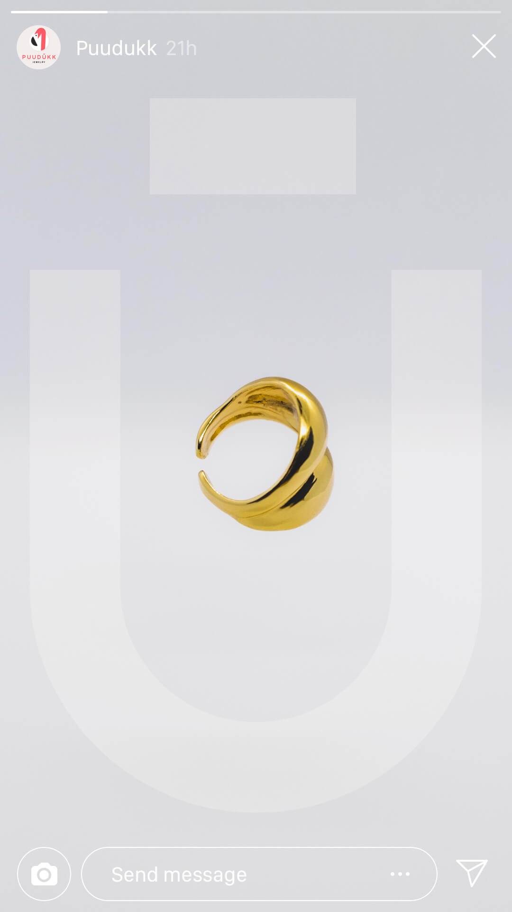